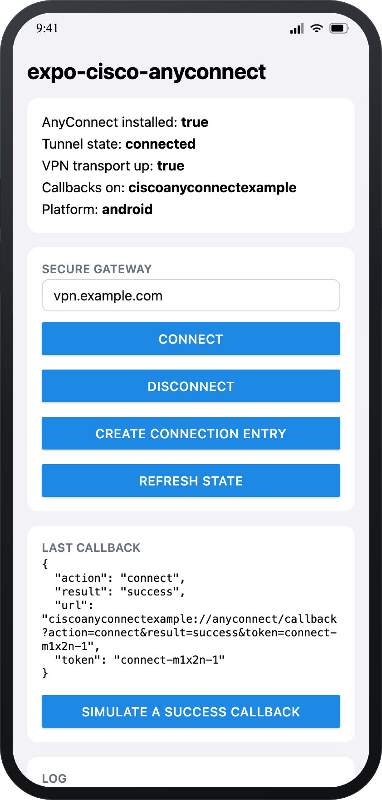
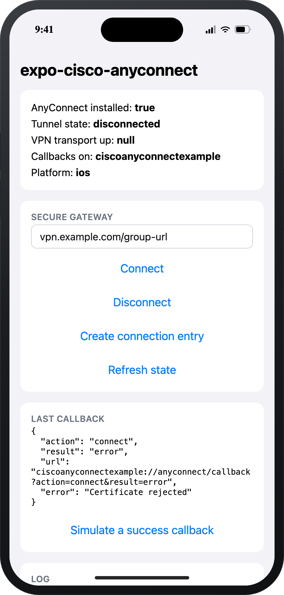

Typed end to end
Every option, event and error code is exported as a TypeScript type, with a stable code on failures.
A typed wrapper around Cisco's documented anyconnect:// URI handler — connect,
disconnect and read real results back. No SDK, no NDA, no VPN entitlement.
npx expo install expo-cisco-anyconnect
Not published to npm yet? Install from GitHub instead:
npm install github:403access/cisco-anyconnect

Cisco publishes no embeddable AnyConnect SDK, so this module is a controller, not a tunnel. That boundary is where the design starts — and it is documented rather than papered over.
packet-tunnel-provider entitlement.
unknown there rather than a fabricated value.
Every option, event and error code is exported as a TypeScript type, with a stable code on failures.
Callback URLs carry a token, so you can tie an outcome to the exact attempt that caused it.
Observed on Android from the system VPN transport; explicitly unknown on iOS instead of invented.
LSApplicationQueriesSchemes, the callback scheme, Android <queries> and the intent filter — written idempotently.
The AnyConnectTransport seam lets you drop in a Cisco SDK or in-process tunnel without touching call sites.
The URI builders, the callback parser and the config plugin are covered by tests that run without a device.
Same component, two platforms — and the difference is the point. On iOS there is no system
VPN observation available, so VPN transport up reads null and the
callback is the source of truth.

result: "error" arrives with whatever detail the
callback carried, so you can show a real message instead of a spinner that never resolves.
About these images. They are rendered mockups of the repository's example app
(example/App.tsx) — generated from the real component's stylesheet by
website/mockups/render.sh, not captured from a device. The values shown are
representative states, not a live VPN session.
Commands resolve as soon as the URI is handed to AnyConnect. The outcome arrives later as an event, exactly the way the platform works.
import CiscoAnyConnect from 'expo-cisco-anyconnect';
// Configure once, as early as possible, so callback URLs are wired up.
CiscoAnyConnect.configure({ callbackScheme: 'myapp' });
if (await CiscoAnyConnect.isInstalled()) {
const { url, token } = await CiscoAnyConnect.connect({
name: 'Corp VPN', // connection entry label
host: 'vpn.example.com', // FQDN, IP, or Group URL
});
console.log('dispatched', url); // outcome arrives via a callback
}import { useState } from 'react';
import { Text } from 'react-native';
import { useAnyConnect, useAnyConnectCallback } from 'expo-cisco-anyconnect';
export function VpnStatus() {
const { state, vpnTransportActive, anyConnectInstalled } = useAnyConnect();
const [error, setError] = useState<string>();
useAnyConnectCallback((event) => {
if (event.action === 'connect' && event.result === 'error') {
setError(event.error);
}
});
return (
<Text>
{state} · transport {String(vpnTransportActive)} · installed{' '}
{String(anyConnectInstalled)}
{error ? ` · ${error}` : ''}
</Text>
);
}// connect() is fire-and-forget. AnyConnect opens its UI, and the outcome
// comes back later — through a URL the module routes into your app.
CiscoAnyConnect.addCallbackListener((event) => {
if (event.result === 'success') {
router.replace('/connected');
return;
}
// The token ties a result to the request that caused it, so parallel
// attempts stay distinguishable.
console.warn(event.token, event.error);
});
await CiscoAnyConnect.connect({ host: 'vpn.example.com' });import CiscoAnyConnect, { type AnyConnectTransport } from 'expo-cisco-anyconnect';
// The URI handler ships as the default. Swap in Cisco's partner SDK, or a
// tunnel you run in-process, without changing a single call site.
class CiscoSdkTransport implements AnyConnectTransport {
readonly id = 'ciscoSdk';
async isAvailable() { /* ... */ }
async getAppInfo() { /* ... */ }
async createConnection(options) { /* ... */ }
async connect(options) { /* ... */ }
async disconnect() { /* ... */ }
async importProfile(url) { /* ... */ }
async importCertificate(options) { /* ... */ }
async localize(options) { /* ... */ }
async closeGui() { /* ... */ }
}
CiscoAnyConnect.setTransport(new CiscoSdkTransport());Your app hands AnyConnect a URI — anyconnect://connect/?… — with callback URLs attached.
AnyConnect comes to the foreground, authenticates and brings up the tunnel.
It opens your onsuccess or onerror URL, returning control to your app.
The module parses the URL, emits a typed event and updates the state snapshot.
The two operating systems expose different amounts of truth. Rather than flattening that into
one unreliable value, the API tells you which is which — every state change carries its
source.
Swipe horizontally to see every column →
| Signal | Android | iOS |
|---|---|---|
state |
Observed — connected / disconnected from the system VPN transport |
unknown until a callback arrives, then real |
vpnTransportActive |
true / false |
null — not observable for another app |
anyConnectInstalled |
Resolved via PackageManager |
Resolved via canOpenURL |
| Connection results | Callback URLs captured natively, including cold start | Callback URLs via React Native Linking |
| App version | Package metadata: version name and code | Unavailable — another app's bundle is unreadable |
| Gating | URI External Control must allow external URIs | The user confirms the first hand-off |
Swipe horizontally to see every column →
| Method | URI | Notes |
|---|---|---|
createConnection |
anyconnect://create/?name=…&host=… |
Adds an entry without connecting. |
connect |
anyconnect://connect/?host=… |
Appends onsuccess / onerror automatically. |
disconnect |
anyconnect://disconnect |
onsuccess is Android-only for this action. |
importProfile |
anyconnect://import/?type=profile&uri=… |
AnyConnect fetches the URL itself, from the device. |
importCertificate |
anyconnect://import/?type=pkcs12&uri=… |
PKCS#12 bundles only. |
localize |
anyconnect://import/?type=localization&… |
Pulls an anyconnect.po table from the gateway. |
closeGui |
anyconnect://close |
iOS only; a no-op elsewhere. |
Every document lives in the repository next to the code it describes, so it is reviewed in the same pull request.
Every function, option, event, type and error code.
architecture.mdLayers, the connect and callback flows, and the state machine.
android.mdURI External Control, MDM managed config, package visibility.
ios.mdQuery schemes, Connect On-Demand, and why state is limited.
config-plugin.mdThe plugin options, and exactly what they write where.
troubleshooting.mdSymptom, cause, fix — plus a diagnostics dump for bug reports.